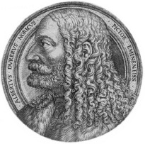

Albrecht Dürer (1471-1528), Kuzey Avrupa’nın en tanınmış Rönesans sanatçılarından biridir. Babası, Almanya, Nuremberg’te yaşayan Macar bir kuyumcuydu ve meslek hayatının sonlarına doğru oğullarına da zarif oyma ve gravürler yaratmak için gereken becerileri öğretti.

Dürer, sanat öğrenmek için İtalya’ya giden ilk kuzeyli sanatçılardan biriydi. 1494’te Venedik’te biraz zaman geçirdikten sonra Almanya’da öğrendiği teknikle Rönesans kuramını birleştireceği Nuremberg’e döndü.
1498’de Dürer, Mahşer’i –Yeni Ahit kitabında tarif edildiği şekliyle dünyanın sonunu– görselleştiren on beş gravür yayınladı. Aralarında en ünlüsü, Mahşer’in Dört Atlısı’nın, yani Ölüm, Kıtlık, Savaş ve Salgın’ın tasvir edildiği garvürdür.
Dürer 1513 ile 1514 yılları arasında üç tane “Ustalık Gravürü”nü yaptı. Bunlardan en meşhuru, şeytanî cazibeye ve tehlikeye karşı korkusuzca at süren bir ortaçağ şövalyesini betimlediği, Şövalye, Ölüm ve Şeytan’dır.
Martin Luther 1517’de Doksan Beş Tezi’ni duyurduktan hemen sonra, Dürer, Reform’un hevesli bir takipçisi oldu. Geç dönem ustalık başyapıtı olan Dört Havariler (1523-1526), İncil’in Luther imzalı Almanca çevirisinden alıntılanan, havarilerin insan hatasını ve gururu kınadığı uzun yazıları içerir. Bu bakımdan Dürer, resmini Lutheranizme kucak açan bir şehir olan Nuremberg’in şehir yöneticilerine sundu.
Son yıllarında Dürer, sanat kuramı ile yakından ilgilendi. 1525’te Piero della Francesca’nın eserine dayanan perspektif üzerine bir çalışma yayınladı. İki yıl sonra, güçlendirme bilimi üzerine bir kitap yazdı. 1528’de öldüğünde, oranlara dair kapsamlı bir bilimsel inceleme üzerinde çalışıyordu.
“Kuzey’in Leonardo’su” olarak bilinen Dürer, yaşamını, yerlisi olduğu Almanya’nın doğacılığı ile İtalyan Rönesansı’nın klasik idealleri arasında uyumu sağlamaya adamıştı.
EK BİLGİLER:
1. En çok gravürleri ile tanınmasna rağmen Dürer, aynı zamanda suluboyalarda da uzmanlaştı. Çimenliğin Büyük Parçası isimli sulu boya tablosunun bilimsel tekniği bugün bile görenleri kendine hayran bırakmaktadır.
2. Dürer, gerçekliği iki boyutlu bir yüzeye kopya etmek için optik bir araç ile deneyler yapmıştır.
3. İnsanın Düşüşü (veya Âdem ile Havva) gravüründe Dürer, dört hayvanı, dört mizacı veya huyu –neşeli, hüzünlü, soğukkanlı ve kızgın– temsil etmek için resme dahil etti.